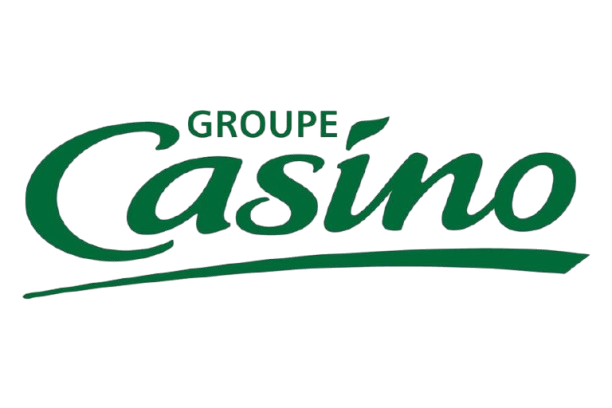
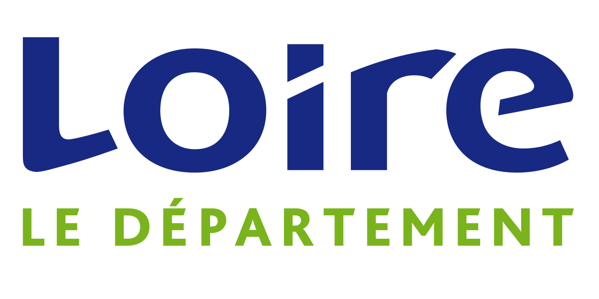
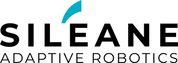
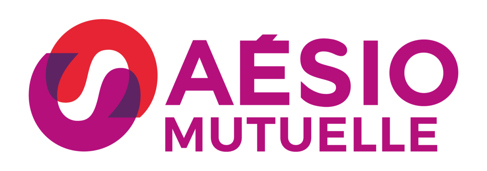
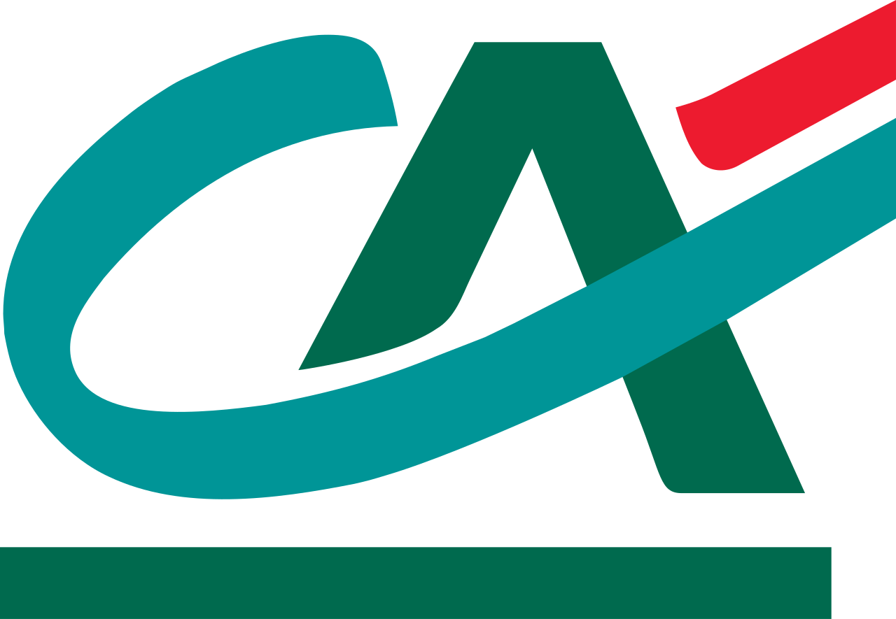
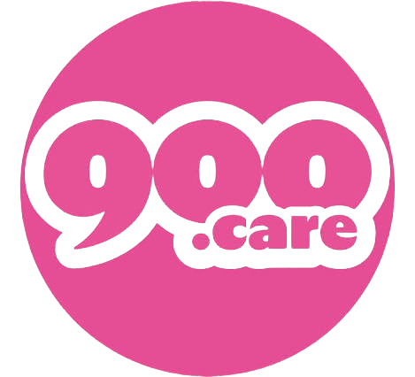
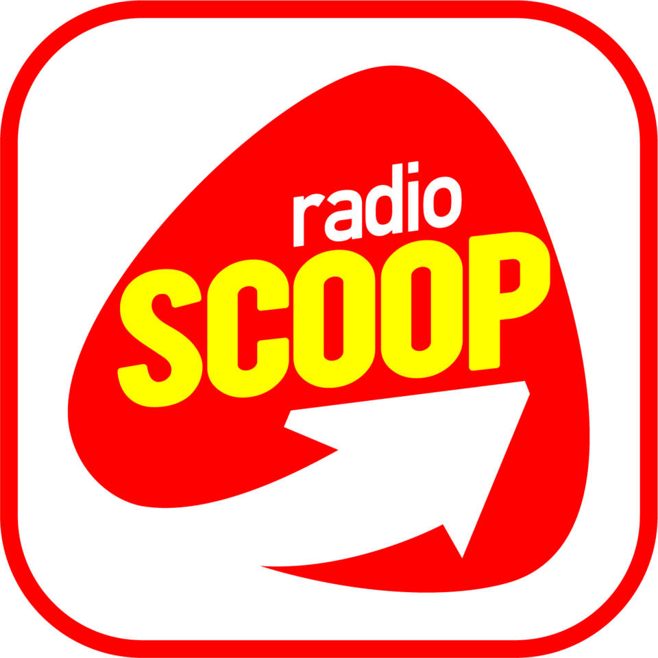

Sponsors actuels
Hummel
Fondée en 1923, Hummel est l’une des plus anciennes marques de vêtements de sport.
Cette saison marque le début de notre collaboration avec l’ASSE.
Site internet
Casino
Partenaire historique depuis 1919.
Site internet

Loire Département
Partenaire fidèle sur la tenue des Verts.
Site internet

ByMyCAR
Groupe français de distribution automobile, partenaire depuis 2019.
Site internet
Kelyps Intérim
Créé en 2018, Kelyps Intérim soutient l’ASSE pour les quatre prochaines saisons.
Site internet
Siléane
Spécialisée en robotique industrielle et intelligence artificielle, basée à Saint-Étienne.
Site internet

Kapriol
Fondée en 1927, Kapriol propose des solutions durables pour le bâtiment.
Site internet
Piscines Desjoyaux
Partenaire depuis 16 ans, présent sur le short des Verts depuis 7 ans.
Site internet
AÉSIO mutuelle
Partenaire depuis 2015, leader en assurance de personnes.
Site internet

WF Invest
Groupe régional actif dans l’événementiel et la restauration.
Site internet
Crédit Agricole Loire Haute-Loire
Partenaire historique et banque officielle des Verts.
Site internet

Saint-Étienne Métropole
Gestion des services publics et collaboration avec le club pour l’attractivité du territoire.
Site internet
900.care
900.care prend soin de vous et de la planète en proposant des produits d’hygiène-beauté
et d’entretien de la maison, écologiques, rechargeables, et conçus avec des formules saines et naturelles.
Site internet

Radio Scoop
Radio local et officielle des verts.
Site internet
